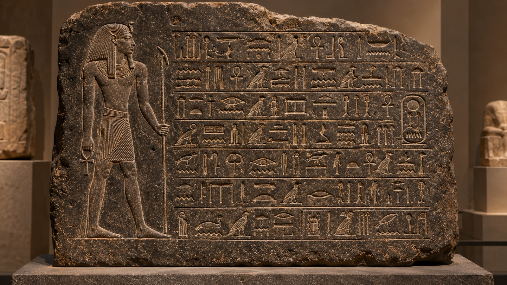

What do you remember?
Have a go from memory. Mistakes are fine.
Check
An essay is a piece of writing several paragraphs long. It is about one topic, just as a paragraph is. But the topic is too complex for one paragraph, so you divide it into several paragraphs, one for each major point, then tie them together with an introduction and a conclusion. Writing an essay is no more difficult than writing a paragraph, except that it is longer. The principles of organization are the same.
The three parts of an essay
An essay has an introduction (one paragraph), a body (at least one, usually two or more paragraphs) and a conclusion (one paragraph). The parts of a paragraph map onto the parts of an essay:
PARAGRAPH
ESSAY
General statements
Thesis statement
A. Topic sentence + support (1, 2, 3)
B. Topic sentence + support
C. Topic sentence + support
Restatement or summary of the main points; final comment
The introduction has two parts: a few general statements to attract your reader's attention, and a thesis statement that states the main idea (like a topic sentence for the whole essay). Each body paragraph develops one subdivision of the topic. The conclusion summarizes or reviews the main points. An essay needs unity and coherence just like a paragraph: transition signals and repeated key nouns link the paragraphs into a whole. (Concluding sentences in body paragraphs aren't always needed when the ideas are closely related.)
A model essay
Read the model essay and notice its structure: the introductory paragraph, the thesis statement (the last sentence of the introduction), three body paragraphs, and the concluding paragraph.
Why Sleep Matters
Every living creature sleeps. Humans spend about a third of their lives doing it, yet many people treat sleep as a waste of time. Scientists, however, have shown that it is anything but wasted. Good sleep is essential to a healthy life because of its effects on the body, the mind, and the emotions.
First of all, sleep keeps the body healthy. During deep sleep, the body repairs muscles and strengthens the immune system. People who sleep fewer than six hours a night catch colds more often and recover more slowly. In addition, regular sleep helps control weight and protects the heart.
Sleep is just as important for the mind. While we sleep, the brain sorts the day's experiences and stores the important ones as memories. Students who sleep well after studying remember more than those who stay up all night. Sleep also improves concentration, so tired people make more mistakes.
Finally, sleep has a powerful effect on our emotions. Tired people become irritable and find small problems hard to handle. Rested people, on the other hand, cope with stress more calmly and get along better with others.
In conclusion, sleep is not a luxury but a basic need. It repairs the body, sharpens the mind, and steadies the emotions. Anyone who wants a healthier and happier life should make seven or eight hours of sleep a priority.
Answer
Answer
Answer
The introductory paragraph
- introduce the general topic of the essay
- capture the reader's interest
- states the specific topic
- may list the subtopics
- may indicate the pattern of organization
- is normally the last sentence of the introduction
Funnel introduction
The introduction to "Why Sleep Matters" is a funnel: wide at the top and narrow at the bottom. It begins with one or two very general sentences, and each sentence is more focused, until the last states very specifically what the essay is about, like focusing a camera with a telephoto lens.
In the model: the first sentence is about every living creature; the next narrows to humans and how much time they spend sleeping; the next brings in the idea that sleep is wasted time. Then the thesis is specific: it names the topic (good sleep) and lists the subtopics: the body, the mind and the emotions.
Attention-getting introductions
Other kinds of introduction are good for capturing the reader's attention. Here are three: a dramatic, interesting or funny story; surprising statistics or facts; and historical background.
Thesis statements
Practice: build the introduction
Each set of sentences, in the right order, forms an introductory paragraph. Type 1 for the most general statement, and so on, with the thesis statement last. Then name the type of introduction.
The thesis statement
The thesis statement is the most important sentence in the introduction: it states the specific topic of the essay.
- Regular exercise brings many valuable benefits to daily life.
- Young people in my culture have less freedom than young people in the United States.
- The large movement of people from rural to urban areas has major effects on cities.
It may also list the subtopics, and indicate the pattern of organization:
Practice: Xanadu
These thesis statements come from two essays on the status of women in an imaginary country.
Logical division of ideas
In this basic pattern you divide your topic into subtopics and discuss each in its own paragraph. It suits causes, reasons, types, kinds, qualities, methods, advantages and disadvantages: "Explain the three causes of inflation." · "Discuss the causes of the U.S. Civil War." · "Describe the various classes of drugs used to treat depression."
A thesis for logical division often says how many subtopics (Inflation has three causes.) and may name them. Ways to do that:
b. A colon before the list: Inflation has three causes: excessive government spending, unrestrained consumer borrowing, and an increase in the supply of paper money.
c. A paired conjunction (both…and, not only…but also) for two subtopics: Puppies, like children, need both love and discipline.
d. Parallel form: the subtopics must have the same grammatical form (all nouns, all prepositional phrases, all noun clauses…).
Practice: analyse the thesis statements
For each, say what the main topic is, what the subtopics are, and which word or punctuation introduces them. Then check.
Answer
Answer
Answer
Answer
Answer
Practice: complete the thesis
Add parallel subtopics to each thesis statement.
Possible answers
Three thesis pitfalls
"A college education is a good investment." → "…is a good investment for four reasons."
"I am going to write about sports injuries." → "Avoid sports injuries by taking a few simple precautions."
"The Internet is a communication superhighway." → "The explosion of the Internet has had both positive and negative consequences."
Write a thesis statement
For a logical division essay, write a thesis statement on two of these topics: clothing, hair or shoe styles in your school (three styles) · dangerous drivers (speeders, cell-phone users, teens) · the appeal of a theme park (children and adults) · the advantages (or disadvantages) of living in a large city or a small town · kinds of appeals advertisers use to sell a product.
Transition signals for logical division
| Signals | Example |
|---|---|
| first, first of all, second, third; next, last, finally; also, in addition, moreover, furthermore | First, excessive government spending can lead to inflation. In addition, unrestrained consumer borrowing can cause inflationary tendencies. Finally, an increase in the supply of paper money gives rise to inflation. |
| and; both … and; not only … but also | Both an increase in the supply of paper money and unrestrained consumer borrowing can cause inflationary tendencies. |
| the first cause / reason / factor; a second problem / result / advantage; one problem; another way / reason; an additional problem; in addition to math and science, … | A second cause is an increase in the supply of paper money. In addition to government spending, unrestrained consumer borrowing can cause inflationary tendencies. |
Linking paragraphs
Link one paragraph to the next by adding a transition to the topic sentence of the second paragraph. It can be a single word, a phrase or a dependent clause that repeats or summarizes the main idea of the paragraph before. Look at the topic sentences in "Why Sleep Matters": First of all and Finally are transition words, and just as important for the mind links back to the paragraph before. A transition can also be a phrase (In addition to keeping the body healthy, …) or a clause (Although sleep protects the body, it matters even more for the mind…).
Which expressions link each body paragraph of the model essay to the one before?
Answer
Practice: link the paragraphs
Here are bare topic sentences for the body of an essay on three ways to learn vocabulary. Add a transition word, phrase or clause to the second and third, varying the linking expressions.
Body 1: One way is to read widely in English.
Body 2: Learners should keep a notebook of new words.
Body 3: Using new words in conversation helps them stay in memory.
One possible version
The concluding paragraph
The conclusion has three purposes: (1) it signals the end with a transition signal; (2) it reminds the reader of your main points, by summarizing your subtopics or paraphrasing your thesis; (3) it leaves your reader with final thoughts, a strong, memorable message. Techniques for the last purpose:
"If this trend continues, fewer and fewer families will be able to send their children through four years of college."
"As a result, the nation will waste the intelligence, imagination, and energy of a large segment of the college-age generation."
"To reverse this trend, we must demand that government increase its financial support of colleges and universities."
"As Horace Mann argued … a nation's economic wealth will increase through an educated public."
Read: "Culture Shock"
Moving to a new country can be an exciting, even exhilarating experience. In a new environment, you somehow feel more alive: seeing new sights, eating new food, hearing the foreign sounds of a new language, and feeling a different climate against your skin stimulate your senses as never before. Soon, however, this sensory bombardment becomes sensory overload. Suddenly, new experiences seem stressful rather than stimulating, and delight turns into discomfort. This is the phenomenon known as culture shock. Culture shock is more than jet lag or homesickness, and it affects nearly everyone who enters a new culture-tourists, business travelers, diplomats, and students alike. Although not everyone experiences culture shock in exactly the same way, many experts agree that it has roughly five stages.
In the first stage, you are excited by your new environment. You experience some simple difficulties such as trying to use the telephone or public transportation, but you consider these small challenges that you can quickly overcome. Your feelings about the new culture are positive, so you are eager to make contact with people and to try new foods.
Sooner or later, differences in behavior and customs become more noticeable to you. This is the second stage of culture shock. Because you do not know the social customs of the new culture, you may find it difficult to make friends. For instance, you do not understand how to make "small talk," so it is hard to carry on a casual, get-acquainted conversation. One day in the school cafeteria, you overhear a conversation. You understand all the words, but you do not understand the meaning. Why is everyone laughing? Are they laughing at you or at some joke that you did not understand? Also, you aren't always sure how to act while shopping. Is this store self-service, or should you wait for a clerk to assist you? If you buy a sweater in the wrong size, can you exchange it? These are not minor challenges; they are major frustrations.
In the third stage, you no longer have positive feelings about the new culture. You feel that you have made a mistake in coming here. Making friends hasn't been easy, so you begin to feel lonely and isolated. Now you want to be with familiar people and eat familiar food. You begin to spend most of your free time with students from your home country, and you eat in restaurants that serve your native food. In fact, food becomes an obsession, and you spend a lot of time planning, shopping for, and cooking food from home.
You know that you are in the fourth stage of culture shock when you have negative feelings about almost everything. In this stage, you actively reject the new culture. You become critical, suspicious, and irritable. You believe that people are unfriendly, that your landlord is trying to cheat you, that your teachers do not like you, and that the food is making you sick. In fact, you may actually develop stomachaches, headaches, sleeplessness, lethargy, or other physical symptoms.
Finally, you reach the fifth stage. As your language skills improve, you begin to have some success in meeting people and in negotiating situations. You are able to exchange the sweater that was too small, and you can successfully chat about the weather with a stranger on the bus. Your self-confidence grows. After realizing that you cannot change your surroundings, you begin to accept the differences and
tolerate them. For instance, the food will never be as tasty as the food in your home country, but you are now able to eat and sometimes even enjoy many dishes. You may not like the way some people in your host country dress or behave in public, but you do not regard their clothes and behavior as wrong-just different.
Two possible conclusions
To sum up, culture shock is a very real phenomenon that has been studied for more than 30 years by psychologists and anthropologist$. Its five phases are (1) positive feelings toward the new culture, (2) awareness of small differences, (3) growing discomfort and need for contact with home culture, (4) negative feelings, and (5) acceptance and adjustment. Symptoms may vary, and not all people experience all five phases. In the end, however, people who suffer culture shock are stronger from having overcome the difficulties and frustrations of adapting to life in a new land.
In conclusion, nearly everyone moving to a new country feels some degree of culture shock. Symptoms may vary, and not all people experience all five stages. Newcomers with a strong support group may feel at home immediately in the new culture, while others may take months to feel comfortable. Staying in touch with friends and family, keeping a positive attitude, and, above all, learning the language as soon as possible are ways to overcome the difficulties and frustrations of adapting to life in a new land.
Practice: write concluding paragraphs
Only the introduction and the topic sentences of the body are given. Write a concluding paragraph for each essay.
The busy schedules that most adults face every day have created a growing health problem in the modern world. Stress affects almost everyone, from the highly pressured executive to the busy homemaker or student. It can cause a variety of physical disorders ranging from headaches to stomach ulcers and even alcoholism. Stress, like the common cold, is a problem that cannot be cured; however, it can be controlled. A person can learn to control stress in four ways.
Body topic sentences: A. Set realistic goals. B. Take up a hobby. C. Exercise regularly. D. Maintain close relationships with family and friends.
A possible conclusion
People come from all over the world to the United Kingdom to pursue education. Some come for a year, while others may stay four years or longer to complete a program or earn a degree. Of course, the first few weeks in a new country are always a little stressful, but knowledge of a few British characteristics and customs can smooth the path for new arrivals.
Body topic sentences: A. British people are usually reserved. B. British people are very orderly, so waiting in a queue is a must. C. The weather is no joke; it rains a lot. D. Cars drive on the left, so stepping off a curb can be dangerous if you are not used to looking right.
A possible conclusion
Essay outlining
Because an essay is long, plan before you write. An outline organizes your thoughts and keeps you on track. A formal outline uses this system:
| I, II, III (Roman numerals) | the major sections: introduction, body, conclusion |
| A, B, C, D (capital letters) | the body paragraphs |
| 1, 2, 3, 4 (Arabic numerals) | the subpoints in each paragraph |
| a, b, c, d (small letters) | the specific supporting details |
Complete the outline of the model essay
Fill in the missing parts of the outline of "Why Sleep Matters". Go back to the essay if you need to.
II. Body
A. Sleep keeps the body healthy.
1. Repairs muscles and strengthens the immune system — a. · b. recover more slowly
2.
B.
1. The brain sorts experiences and stores memories — a.
2.
C.
1. Tired people:
2. Rested people:
III. Conclusion · Sleep is a basic need; it repairs the body, sharpens the mind, steadies the emotions.
Check the missing parts
Write an essay
Choose one of your thesis statements from the previous tab. Brainstorm ideas, then build a formal outline in the box, then write the essay.
Now under pressure (one paragraph)
Choose one: an area where one culture has influenced another (food, language, music, art, political or education system) · define friendship, success, addiction, sports fanaticism, an optimist, a pessimist, a good teacher or a good parent, using examples. Spend 1–2 minutes planning, write, then spend 1 minute checking.
Applying what you've learned
The writer of this newspaper article uses logical division of ideas. As you read, notice the organization, and look for the words and phrases the writer uses to introduce examples.
You Are Where You Sit: Seating Choice Can Tell a Lot about a Person
1 When he goes to the movies, Ravel Centeno likes to sit on the aisle and stretch his feet out-a fact that by itself speaks volumes about his personality, according to a new study. The study, commissioned by the British movie theater company Odeon, examined how theater seating habits reflect personality. And as the summer movie season reaches its zenith, the research says you are where you sit. Psychologist Donna Dawson divided moviegoers into four different personality types based on their seating preferences and cited examples of movie characters who fit those types. 2 Those who sit on the aisle, like Centeno, are "detached observers"-people who like to have their own space, who are observers and tend to be quieter. "That's funny, because I'm a writer," Centeno said Thursday as he waited to see AI. at the Cineplex Odeon at Universal CityWalk. "So that's what I do (observe people)." One celluloid example of a detached observer, said Dawson, is Jack Nicholson's Melvin Udall character in As Good as It Gets. 3 Other personality types, according to Dawson: 4 The "front row film fanatic": Extroverted, assertive, and competitive, these are people who like to see movies with others, not on their own. An example from the movies might be Mike Meyers's Austin Powers or Julia Roberts's Erin Brockovich. 5 The"middle-of-the-roaders": These are the people who like to sit in the middle, fittingly. They are people who are flexible and try to get along with others, such as Gwyneth Paltrow's Emma. Gloria and Tom Candelaria of Redlands say that seems to fit them. "We like the middle because it's not too far back and not too close to the front," Gloria Candelaria said as she scanned the marquee at CityWalk. Tom Candelaria said the "middle-of-the-roader" label seems to fit them because "we're easygoing." 6 The "invisible rebels": Those who sit far in the back are people who are rebellious and like excitement but don't necessary seek the limelight, the study said. A typical example is Clint Eastwood's Man with No Name and Sigourney Weaver's Lt. Ripley in the Alien films. "The back row is,where things happen; it's an exciting area of danger and lots of passionate smooching," Dawson said in the Odeon report. "It tends to attract people who are rebellious." 7 For some people, though, sometimes a chair is just a chair. "I don't knowwherever there's an empty seat," said filmgoer Chris Marshall of Lake Hollywood, when asked where he likes to sit. "That works for me."
About the organization
Answer
About the support
Answer
About the content
Answer
Brainstorm ideas and examples for an essay on You Are Where You Sit (in the classroom), You Are What You Wear (fashion styles) or You Are What You Drive.
Recall from earlier
Check
From memory: this chapter
2. Use the logical division of ideas pattern to divide a topic into separate paragraphs.
3. Link paragraphs with transitions: show how one paragraph is related to the next with words, phrases or clauses.
4. Prepare an outline to organize your ideas before you begin to write.